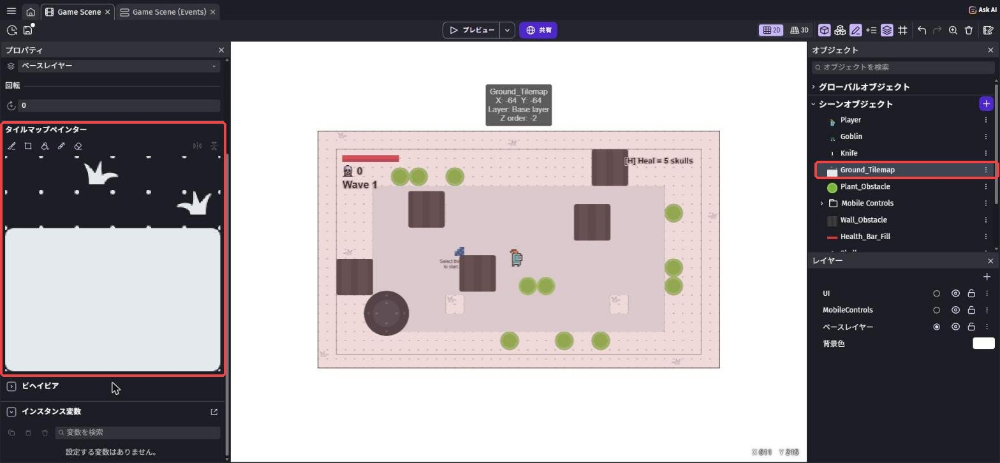
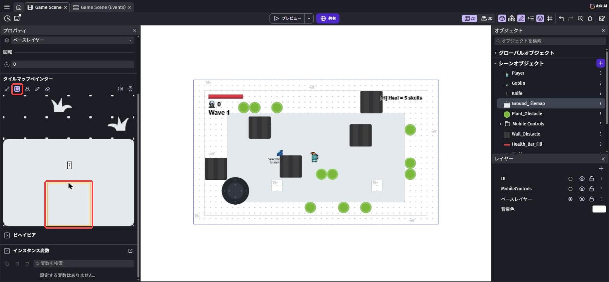
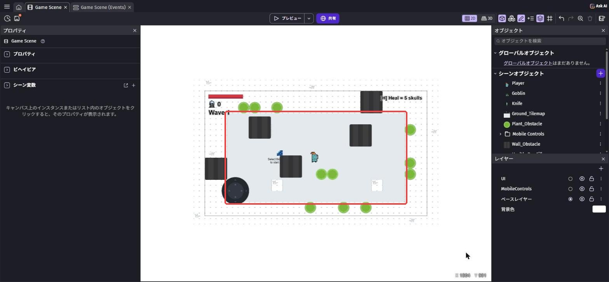
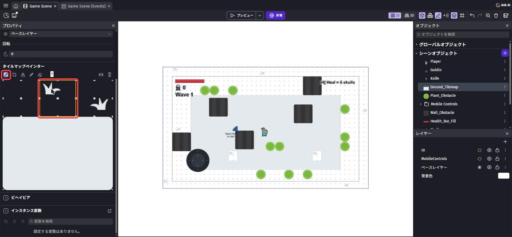
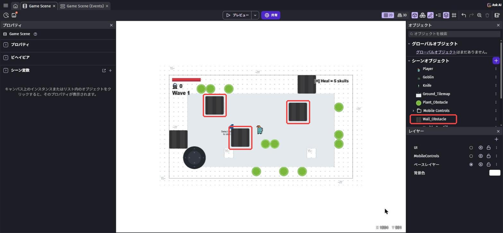
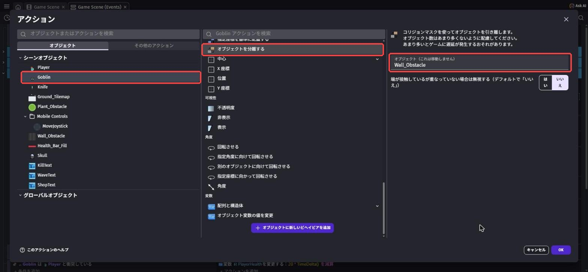
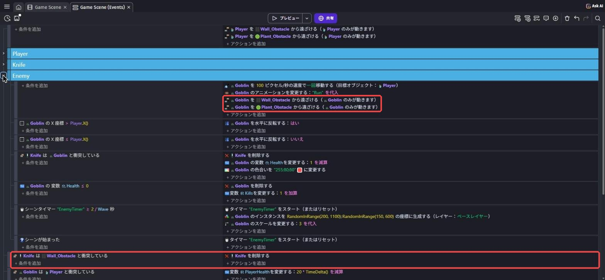
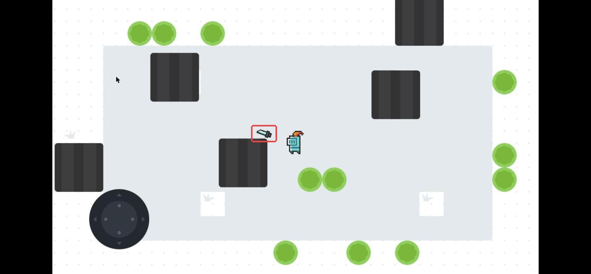

ステージを作ろう
🎯 この章でできるようになること
- タイルマップで、床をぬってステージの形を変えられる
- 壁（障害物）を置いて、通れない場所を作れる
- オブジェクトを分離する で、敵も壁にぶつかるようにできる
3-1. タイルマップってなに？
スターターの床（Ground_Tilemap）は「タイルマップ」でできています。
タイルマップは、小さな四角い絵（タイル）を、ます目にならべて作る地面です。
お絵かきのように、ブラシでタイルをぬって、ステージの形を変えられます。
「Game Scene」のタブを開きます。
ステージの灰色の床をクリックすると、左に「タイルマップペインター」（タイルマップのお絵かき道具）が出てきます。
左の プロパティ を下にスクロールすると、ぬれるタイルの一覧が見えます。

3-2. 床を広げよう
道具の2番目の「四角」を選びます。
タイルの一覧から、灰色の床のタイル（下の段のまん中）をクリックします。
選んだタイルに枠がつきます。

ステージのまん中の白い部分を、左上から右下へドラッグします。
ドラッグしたところが灰色の床になり、大きな部屋ができます。
まちがえたら Ctrl + Z（Macは Cmd + Z）でもどせます。

道具の1番目の「ブラシ」を選び、草の絵のタイルをクリックします。
床のあちこちをクリックすると、1マスずつ草のタイルが置けます。
自分の好きな模様にしてみよう。

3-3. 壁を置こう
一覧の Wall_Obstacle（石のかべ）を、ステージの部屋の中にドラッグして置きます。
3つくらい、柱のように置いてみよう。
スターターのイベントで、プレイヤーはもう Wall_Obstacle を通りぬけられないようになっています。

ドラッグしても置けないときは、一覧の「⋮」から「シーンにインスタンスを追加」を選ぶと、画面のまん中に置かれます。
そのあと、置いたものをドラッグして動かそう。
3-4. ゴブリンとナイフも壁にぶつかるようにしよう
イベントシートを開き、Enemy グループの1つ目のイベント（条件のないもの）に、アクションを2つ足します。
分離で検索 →「オブジェクトを分離する」、オブジェクト はGoblin、オブジェクト（これは移動しません） はWall_Obstacle- もう1つ「オブジェクトを分離する」で、
GoblinとPlant_Obstacle

「これは移動しません」と書いてあるほうの壁は動きません。
スターターでも、プレイヤーをかべから押しもどすのに使われています。
グループの外（いちばん下）に新しいイベントを作ります。
条件は「衝突」で Knife と Wall_Obstacle。
アクションは「オブジェクトを削除する」で Knife。

保存してから プレビュー します。
広くなった部屋で、騎士もゴブリンも壁を通りぬけられません。
壁に向かってナイフを投げると、壁に当たって消えます。
壁のかげにかくれながら戦ってみよう。

💪 やってみよう
タイルマップと壁を使って、自分だけのダンジョンを作ろう。
通路でつながった部屋を2つ作るのもおもしろいよ。
ヒント
部屋を広げたら、ゴブリンが出てくる場所（第2章の RandomInRange の数字）も、部屋の中になるように変えよう。
消しゴムでタイルを消すと、そこは何もない場所になります。
3-5. 🚨 つまずきポイント集
タイルがぬれない
原因: タイルマップではなく、ほかのオブジェクトを選んでいる。
直し方: ステージの床をクリックして、左に「タイルマップペインター」が出ているか確かめよう。
ゴブリンが壁をすりぬける
原因: オブジェクトを分離する の オブジェクト と オブジェクト（これは移動しません） が反対になっている。
直し方: オブジェクト（動くほう）が Goblin、これは移動しません のほうが Wall_Obstacle になっているか確かめよう。
ドラッグしたら壁ではなく床がぬれた
原因: タイルマップのお絵かきモードのまま、ステージをドラッグした。
直し方: ステージの外の何もないところをクリックしてから、もう一度ドラッグしよう。
3-6. ✅ チェックリスト
全部チェックできたら第3章クリア！
🎉 次回は、体力バーと倒した数を画面に出すよ。